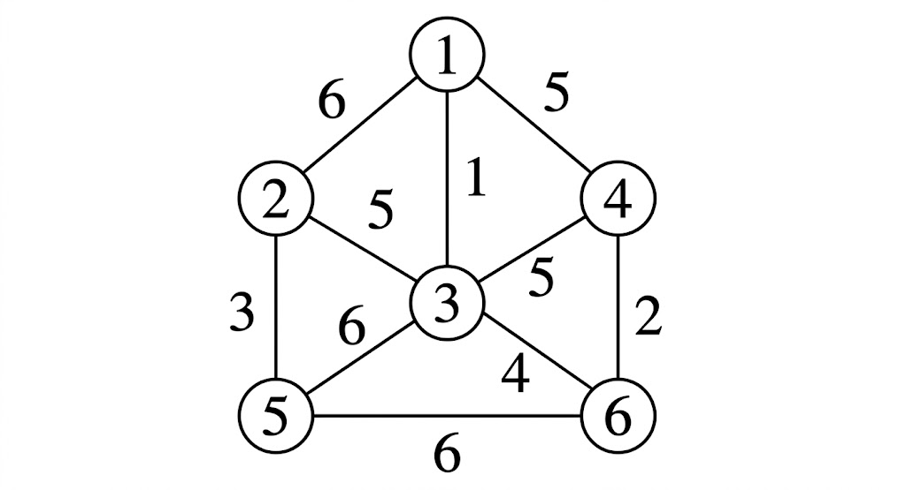
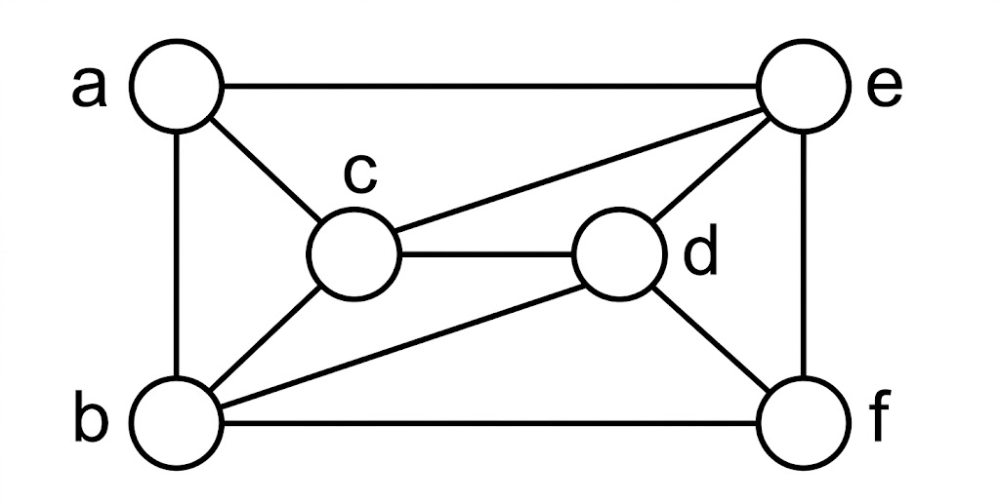

Rajiv Gandhi Proudyogiki Vishwavidyalaya, Bhopal
New Scheme Based On AICTE Flexible Curricula
CSE-Computer Science Engineering | IV-Semester
Module 1: Introduction to Algorithms and Divide & Conquer
Algorithms, Designing algorithms, analyzing algorithms, asymptotic notations, heap and heap sort. Introduction to divide and conquer technique, analysis, design and comparison of various algorithms based on this technique, example binary search, merge sort, quick sort, strassen’s matrix multiplication.
Previous Years questions appears in RGPV exam.
Q.1) Solve the following recurrence relations using the substitution method.
$$T(n) = \begin{cases} 1 & n \le 4 \\ 2T(\sqrt{n}) + \log n & n > 4 \end{cases}$$ (June-2025)
Q.2) The worst case time of procedure merge sort is $O(n \log n)$. What is its best case time? Can we say that the time for merge sort is $O(n \log n)$? (June-2025)
Q.3) Give the asymptotic bounds for the equation $f(n) = 2n^2 - 4n + 20$ and represent it in terms of $\theta$ notation. (Dec-2024)
Q.4) Define Quicksort? Sort the elements 22, 12, 30, 46, 28, 14, 8, 10, 56, 18, 3 using Merge sort. (Dec-2024)
Q.5) Write an algorithm to find the matrix multiplication using Strassen's method. (Dec-2024)
Q.6) Write short notes on: Binary search algorithm and its time complexity. (Dec-2024)
Q.7) Obtain the asymptotic bound using the substitution method for the recurrence relation $T(n) = 3T(n/3) + n$ and represent it in terms of $\theta$ notation. (June-2024)
Q.8) What is Merge sort? Sort the elements 20.30.15.11.35.19.12.11.55 using Merge sort. (June-2024)
Q.9) Discuss Strassen's matrix multiplication and Classical O(n²) methods. Determine when Strassen's method outperforms classical method. (June-2024)
Q.10) Write short notes on: Binary search algorithm and its time complexity (June-2024)
Q.11) Solve the following recurrence relations using the substitution method
$$T(n) = \begin{cases} 1 & n \le 4 \\ T(\sqrt{n}) + C & n > 4 \end{cases}$$ (Nov-2023)
Q.12) Give an algorithm for quick sort and analyze the algorithm. (Nov-2023)
Q.13) What do you mean by performance analysis of an algorithm? Explain. (Nov-2023)
Q.14) Explain Heap? Sort the following data using heap sort.
$81, 39, 10, 36, 45, 15, 55, 23, 91, 88, 12$ (Nov-2023)
Q.15) Write short notes on: Asymptotic Notations (Nov-2023)
Q.16) Trace the quick sort algorithm to sort the list C, O, L, L, E, G, E in alphabetical order. (June-2023)
Q.17) Discuss Strassen's matrix multiplication and derive its time complexity. (June-2023)
Q.18) Design merge sort algorithm and discuss its best-case, average-case and worst-case Efficiency. (June-2023)
Q.19) Write short notes on: Heap sort (June-2023)
Q.20) Write and explain the control abstraction for Divide and conquer. (Nov-2022)
Q.21) Explain the theta notation used in algorithm analysis. (Nov-2022)
Q.22) What is an algorithm? Explain its characteristics. (Nov-2022)
Q.23) Write short notes on: Binary search (Nov-2022)
Module 2: Greedy Strategy
Study of Greedy strategy, examples of greedy method like optimal merge patterns, Huffman coding, minimum spanning trees, knapsack problem, job sequencing with deadlines, single source shortest path algorithm.
Previous Years questions appears in RGPV exam.
Q.1) Obtain a set of optimal Huffman codes for message (M1, ... M7) with relative frequencies (q1, q2.....,q7) = (4, 5, 7, 8, 10, 12, 20). Draw the decode tree for this set of codes. (June-2025)
Q.2) Use algorithm shortest paths to obtain in non-decreasing order the lengths of the shortest paths from vertex 1 to all remaining vertices in the di-graph.
![A directed graph with 6 vertices labeled 1 to 6 in circles. The directed edges and their corresponding weights are as follows: from vertex 1 to 2 with a weight of 2; from vertex 1 to 3 with a weight of 15; from vertex 2 to 4 with a weight of 30; from vertex 2 to 5 with a weight of 10; from vertex 3 to 4 with a weight of 4; from vertex 3 to 6 with a weight of 10; from vertex 4 to 5 with a weight of 4; and from vertex 4 to 6 with a weight of 10. The graph is laid out with vertex 1 on the far right. Vertices 2 and 3 are to the left of 1, with 2 above 3. Vertex 4 is to the left of 2 and 3, roughly in the center. Vertices 5 and 6 are to the far left, with 5 above 6.](../../sem-IV-papers/CSE/cs-402/ques-diagrams/Q.2-b_june-2025.png)
(June-2025)
Q.3) Construct a Huffman coding for the given data? Write the applications of huffman coding.
| Character | a | b | c | d | e | f |
|---|---|---|---|---|---|---|
| Frequency | 3 | 8 | 15 | 22 | 33 | 46 |
(Dec-2024)
Q.4) Solve the following problem of job sequencing with deadlines using the Greedy method. $n = 5$ with profits $(p_1, p_2, p_3, p_4, p_5) = (5, 20, 10, 15, 1)$ and deadlines $(d_1, d_2, d_3, d_4, d_5) = (3, 2, 1, 2, 3)$. (Dec-2024)
Q.5) Construct a multistage graph for the given graph using the Greedy method.

(Dec-2024)
Q.6) Write short notes on: Single source shortest path algorithm. (Dec-2024)
Q.7) Define spanning tree? Construct a minimal spanning tree for the given graph using Prim's algorithm.

(June-2024)
Q.8) Solve the following problem of job sequencing with deadlines using the Greedy method.
$n = 4, (p_1, p_2, p_3, p_4) = (100, 10, 15, 27)$ and $(d_1, d_2, d_3, d_4) = (2, 1, 2, 1)$. (June-2024)
Q.9) Apply the greedy method to solve the 0/1 Knapsack problem for $n = 3, m = 20, (w_1, w_2, w_3) = (18, 15, 10)$ and $(p_1, p_2, p_3) = (25, 24, 15)$. (June-2024)
Q.10) Write short notes on: Single source shortest path algorithm (June-2024)
Q.11) What is the solution generated by the function JS when $n = 7, (P_1, P_2, P_3, ......... P_7) = (3, 5, 20, 18, 1, 6, 30)$ and $(d_1, d_2, ......... d_7) = (1, 3, 4, 3, 2, 1, 2)$. (Nov-2023)
Q.12) Show that if $t$ is a spanning tree for the undirected graph G, then the addition of an edge $q, q \notin E(t)$ and $q \in E(G)$, to $t$ creates a unique cycle. (Nov-2023)
Q.13) How to solve the Knapsack problem with greedy method? Explain. (June-2023)
Q.14) Write an algorithm for single source shortest path and explain with an example. (June-2023)
Q.15) Discuss briefly about the minimum spanning tree. (June-2023)
Q.16) Write a greedy algorithm to state the Job- Sequencing with deadlines problem. Find an optimal sequence to the n = 5 Jobs where profits $(P_1, P_2, P_3, P_4, P_5) = (20, 15, 10, 5, 1)$ and deadlines $(d_1, d_2, d_3, d_4, d_5) = (2, 2, 1, 3, 3)$. (Nov-2022)
Q.17) Write short notes on: Huffman coding (Nov-2022)
Module 3: Dynamic Programming
Concept of dynamic programming, problems based on this approach such as 0/1 knapsack, multistage graph, reliability design, Floyd-Warshall algorithm.
Previous Years questions appears in RGPV exam.
Q.1) Give an example of a set of knapsack instances for which $|S^i| = 2^i, 0 \le i \le n$. The set should include one instance for each $n$. (June-2025)
Q.2) Explain Floyd Warshall algorithm with suitable example. (June-2025)
Q.3) Find optimal solution for 0/1 knapsack problem (W1, W2, W3, W4) = (10, 15, 6, 9), (P1, P2, P3, P4) = (2, 5, 8, 1) and M = 30. (June-2025)
Q.4) Write short notes on: Reliability Design (June-2025)
Q.5) Solve the following 0/1 Knapsack problem using dynamic programming where $n = 4, m = 40, (w_1, w_2, w_3, w_4) = (2, 11, 22, 15)$ and $(p_1, p_2, p_3, p_4) = (11, 21, 31, 33)$. (Dec-2024)
Q.6) Explain the Floyd Warshall algorithm for the given graph.

(Dec-2024)
Q.7) Construct a multistage graph for the given graph using the greedy method.
![A directed multistage graph with 12 vertices. Stage 1 has vertex 1 (s). Stage 2 has vertices 2, 3, 4, 5. Stage 3 has vertices 6, 7, 8. Stage 4 has vertices 9, 10, 11. Stage 5 has vertex 12 (t). The directed edges and their weights are: from 1 to 2 with weight 9; 1 to 3 with weight 7; 1 to 4 with weight 3; 1 to 5 with weight 2; 2 to 6 with weight 4; 2 to 7 with weight 2; 2 to 8 with weight 1; 3 to 6 with weight 2; 3 to 7 with weight 7; 4 to 8 with weight 11; 5 to 7 with weight 11; 5 to 8 with weight 8; 6 to 9 with weight 6; 6 to 10 with weight 5; 7 to 9 with weight 4; 7 to 10 with weight 3; 8 to 10 with weight 5; 8 to 11 with weight 6; 9 to 12 with weight 4; 10 to 12 with weight 2; 11 to 12 with weight 5.](../../sem-IV-papers/CSE/cs-402/ques-diagrams/Q.4-b_june-24-Q5-a_nov-22.png)
(June-2024)
Q.8) Explain the Floyd Warshall algorithm for the given graph.
(June-2024)
Q.9) Use the function OBST to compute $w(i, j), r(i, j)$ and $c(i, j), 0 \le i < j \le 4$ for the identifier set $(a_1, a_2, a_3, a_4) =$ (char, float, while, else) with $p(1) = \frac{1}{20}, p(2) = \frac{1}{5}, p(3) = \frac{1}{10}, p(4) = \frac{1}{20}, q(0) = \frac{1}{5}, q(1) = \frac{1}{10}, q(2) = \frac{1}{5}, q(4) = \frac{1}{20}$. Using $r(i, j)$'s construct the optimal binary search tree. (June-2024)
Q.10) Find optimal solution for 0/1 knapsack problem $(W_1, W_2, W_3, W_4) = (10, 15, 6, 9), (P_1, P_2, P_3, P_4) = (2, 5, 8, 1)$ and $M = 30$. (Nov-2023)
Q.11) How reliability design can be obtained using dynamic programming? (Nov-2023)
Q.12) Give an example of a set of knapsack instances for which $|S^i| = 2^i, 0 \le i \le n$. The set should include one instance for each $n$. (Nov-2023)
Q.13) What do you mean by forward and backward approach of problem solving in Dynamic Programming? (June-2023)
Q.14) How the reliability of a system is determined using dynamic programming? Discuss. (June-2023)
Q.15) Find an optimal solution for following 0/1 Knapsack problem using dynamic programming:
Number of objects $n = 4$, Knapsack Capacity $M = 5$,
Weights $(W_1, W_2, W_3, W_4) = (2, 3, 4, 5)$ and Profits $(P_1, P_2, P_3, P_4) = (3, 4, 5, 6)$. (June-2023)
Q.16) Write short notes on: Dynamic Programming (June-2023)
Q.17) Differentiate between greedy method and dynamic programming. (Nov-2022)
Q.18) What do you mean by forward and backward approach of problem solving in Dynamic Programming? (Nov-2022)
Q.19) Discuss the need of Floyd Warshall Algorithm. Write the advantages and its time complexity. (Nov-2022)
Q.20) Find minimum path cost between vertex $s$ and $t$ for following multistage graph using dynamic programming.
(Nov-2022)
Module 4: Backtracking and Branch & Bound
Backtracking concept and its examples like 8 queen’s problem, Hamiltonian cycle, Graph coloring problem etc. Introduction to branch & bound method, examples of branch and bound method like traveling salesman problem etc. Meaning of lower bound theory and its use in solving algebraic problem, introduction to parallel algorithms.
Previous Years questions appears in RGPV exam.
Q.1) Given an $n \times n$ chessboard, a knight is placed on an arbitrary square with coordinates $(x, y)$. The problem is to determine $n^2-1$ Knight moves such that every square of the board is visited once if such a sequence of moves exists. Present an algorithm to solve this problem. (June-2025)
Q.2) Consider the traveling salesperson instance defined by the cost matrix.
$$\begin{pmatrix} \infty & 7 & 3 & 12 & 8 \\ 3 & \infty & 6 & 14 & 9 \\ 5 & 8 & \infty & 6 & 18 \\ 9 & 3 & 5 & \infty & 11 \\ 18 & 14 & 9 & 8 & \infty \end{pmatrix}$$
(June-2025)
Q.3) Suppose there are $n$ jobs to be executed but only $k$ processors that can work in parallel. The time required by jobs $i$ to $t_i$, write an algorithm that determines which jobs are to be run on which processors and the order in which they should be run so that the finish time of the last job is minimized. (June-2025)
Q.4) Explain in detail about the FIFO branch and bound. (Dec-2024)
Q.5) Write an algorithm for the 8-queens problem using backtracking. (Dec-2024)
Q.6) Draw the state space tree for 'm' coloring when $n=3$ and $m=3$. (Dec-2024)
Q.7) Write short notes on: Hamiltonian graph and cycle. (Dec-2024)
Q.8) Using branch and bound technique explain the 0/1 knapsack problem. (June-2024)
Q.9) Give the solution to the 8-queens problem using backtracking. (June-2024)
Q.10) What is graph coloring? Explain graph coloring for the given graph.

(June-2024)
Q.11) Write short notes on: Parallel algorithms (June-2024)
Q.12) Generalize Hamiltonian so that it processes a graph whose edges have costs associated with them and finds a Hamiltonian cycle with minimum cost. Assume that all edge costs are positive. (Nov-2023)
Q.13) How can comparison trees be used for deriving lower bounds on problem of sorting. (Nov-2023)
Q.14) Draw the portion of state space tree generated by LCBB for following knapsack instance: $n = 4, (P_1, P_2, P_3, P_4) = (10, 10, 12, 18)$ and $(W_1, W_2, W_3, W_4) = (2, 4, 6, 9)$ and $M = 15$ (Nov-2023)
Q.15) Write short notes on: Graph Coloring Problem (Nov-2023)
Q.16) Explain the 8 queen's problem and apply the backtracking to solve the 8 queen's problem. (June-2023)
Q.17) Write the control abstraction for LC-Search. Explain how Traveling Salesperson problem is solved using LCBB.
$$\begin{bmatrix} 0 & 20 & 30 & 10 & 11 \\ 15 & 2 & 16 & 4 & 2 \\ 3 & 5 & 0 & 2 & 4 \\ 10 & 6 & 18 & 0 & 3 \\ 16 & 4 & 7 & 16 & 0 \end{bmatrix}$$
(June-2023)
Q.18) Write short notes on: Parallel algorithm (June-2023)
Q.19) Discuss the use of lower bound theory and its uses in solving the algebraic problem (Nov-2022)
Q.20) What is graph coloring problem? Describe the backtracking technique to m-coloring with following planar graph.
![A planar graph represented as a map with 5 regions. A large outer rectangular region is labeled 5. Inside it, there are four regions labeled 1, 2, 3, and 4. Region 1 is a central rectangle. Region 2 is to the right of region 1. Region 3 is situated below both region 1 and region 2. Region 4 is to the left of region 1 and region 3. Consequently, region 1 is adjacent to 2, 3, 4, and 5; region 2 is adjacent to 1, 3, and 5; region 3 is adjacent to 1, 2, 4, and 5; and region 4 is adjacent to 1, 3, and 5.](../../sem-IV-papers/CSE/cs-402/ques-diagrams/Q.6-a_nov-2022.png)
(Nov-2022)
Q.21) Write about Hamiltonian cycle. Draw portion state space tree for the following graph.

(Nov-2022)
Module 5: Trees, Graphs, and NP-Completeness
Binary search trees, height balanced trees, 2-3 trees, B-trees, basic search and traversal techniques for trees and graphs (In order, preorder, postorder, DFS, BFS), NP-completeness.
Previous Years questions appears in RGPV exam.
Q.1) Show that DFS visits all vertices in G reachable from V. (June-2025)
Q.2) Obtain a nondeterministic algorithm of complexity $O(n)$ to determine whether there is a subset of $n$ numbers $a_i, 1 \le i \le n$, that sums of $m$. (June-2025)
Q.3) Write an algorithm to delete an element $x$ from a binary search tree $t$. What is the time complexity of your algorithm? (June-2025)
Q.4) What do you mean by balance factor in AVL tree? Give a suitable example to balance a AVL tree. (June-2025)
Q.5) Write short notes on: B-Trees (June-2025)
Q.6) Write short notes on: Tree Traversal (June-2025)
Q.7) Use the function OBST to compute $w(i, j), r(i, j)$ and $c(i, j)$, $0 \le i < j \le 4$ for the identifier set $(a_1, a_2, a_3, a_4) =$ (double, int, for, if) with $p(1:4) = (3, 3, 1, 1)$ and $q(0:4) = (2, 3, 1, 1)$. Using $r(i,j)$'s construct the optimal binary search tree. (Dec-2024)
Q.8) Explain in detail Height balanced tree with an example. (Dec-2024)
Q.9) Write short notes on: Breadth First Search. (Dec-2024)
Q.10) Explain in detail about 2-3 Trees with an example. (June-2024)
Q.11) Write short notes on: NP Completeness (June-2024)
Q.12) Write a function to construct the binary tree with a given inorder sequence I and given postorder sequence P. What is the complexity of the function? (Nov-2023)
Q.13) Give an example of an n-vertex graph for which the depth of recursion of DFS starting from a particular vertex V is n-1 whereas the queue of BFS has at most one vertex at any given time, if BFS is started from the same vertex V. (Nov-2023)
Q.14) Write short notes on: DFS and BFS (Nov-2023)
Q.15) Discuss the differences between BFS and DFS. (June-2023)
Q.16) What are 2-3 trees used for? Why are 2-3 trees better than BST trees? Write the limitations of 2-3 tree in CSE. (June-2023)
Q.17) Write short notes on: Height balanced tree (June-2023)
Q.18) Construct B Tree of order 5 for the list of elements 2, 8, 5, 6, 13, 9, 14, 12, 19, 24, 18, 15, 5, 16, 20, 21 (Nov-2022)
Q.19) How do you find the height of a balanced tree? Explain with an example. (Nov-2022)
Q.20) Write short notes on: Tree Traversals (Nov-2022)
Q.21) Write short notes on: NP completeness (Nov-2022)